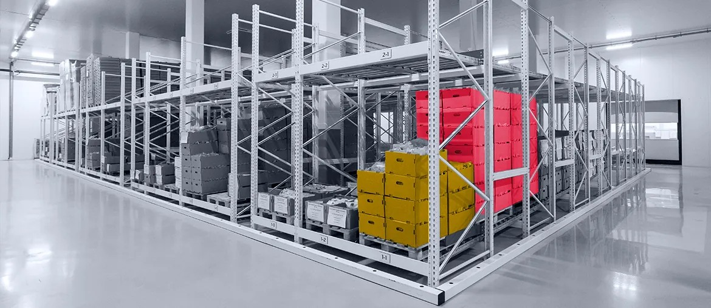

Map the live handoffs
Map facility requests, outfit changes, and fleet support handoffs across Alblasserdam, Zwijndrecht, and key co-makers.
Oceanco’s public story is strong. The harder work sits behind it. Facility requests, outfit changes, co-maker updates, and fleet support must move in one clear flow.
We saw Oceanco hiring a Senior Facility Engineer and a Lead Engineer - Outfit. Simply Custom is moving into outfitting. Fleet Support is active too. That mix usually means the handoff layer is under load.
The hiring signal points to delivery pressure, not only headcount growth. Facility work needs planned requests, budgets, and KPI reporting. Outfit engineering needs clean interfaces, approved drawings, and fast fixes with co-makers. Fleet Support then carries more manual follow-up after delivery. If handoffs stay split, build speed slows and leaders lose clear status.
We would start with a dedicated squad under Oceanco’s own project and operations leads. The goal is simple: make work visible earlier and reduce manual chasing.
Map facility requests, outfit changes, and fleet support handoffs across Alblasserdam, Zwijndrecht, and key co-makers.
Set one shared request flow, with owners, due dates, budget checks, and clear stage rules.
Connect drawings, scope changes, and service history so teams stop copying updates between systems.
Add dashboards, alerts, and QA checks for weekly reviews, faster approvals, and audit-ready reporting.
Elinext is a full-cycle software development company, active since 1997. We have about 700 in-house specialists, with no freelancers or subcontractors. For industrial work, that matters: you need stable delivery, clean QA, and careful change control. Our teams support companies such as Siemens, Broadcom, Volkswagen, TRUMPF, and TUI. We work with React, Angular, .NET, Python, QA, and DevOps. We hold ISO 9001 and ISO 27001. We can work as a dedicated squad under your own project lead. That is the same mix needed for a controlled pilot inside Oceanco’s flow.

Elinext helped modernize a legacy MES and support integration into end-client environments.
The system reached ROI up to 400% and became the client’s core revenue line.
View case study
Elinext built setup and management modules for an industrial sensing workflow under a tight deadline.
Two core modules shipped in six weeks, on time and on budget.
View case studyA short call can test the fit in one active stream.
Start the conversation